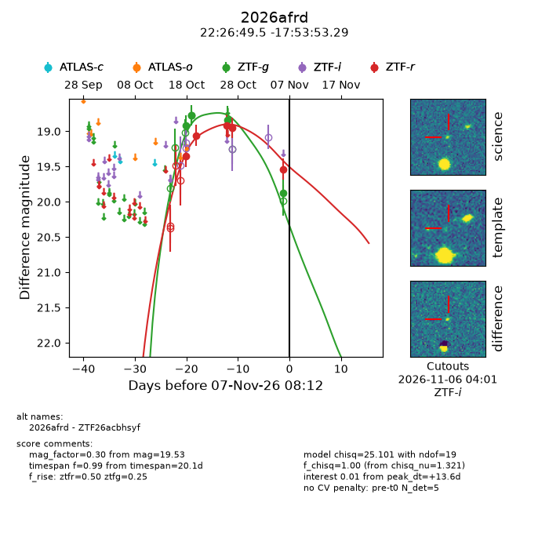
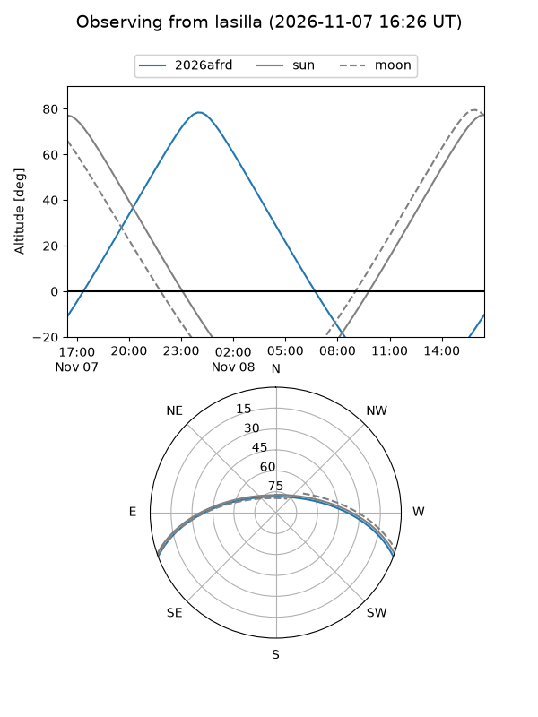
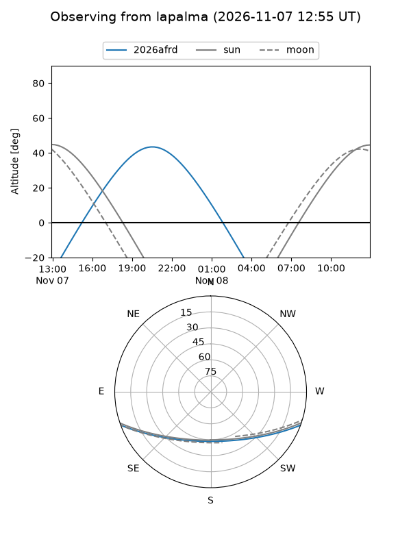
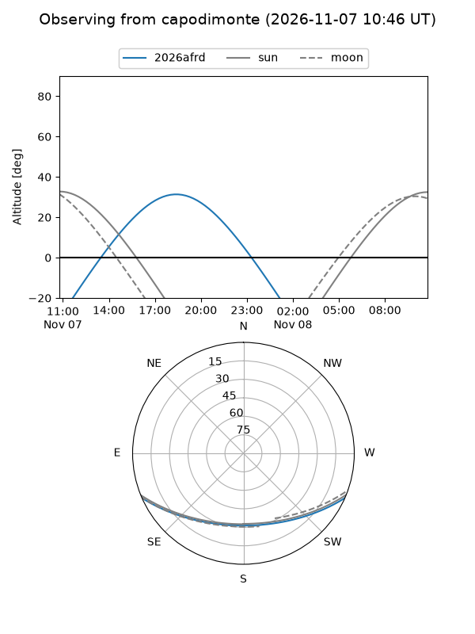
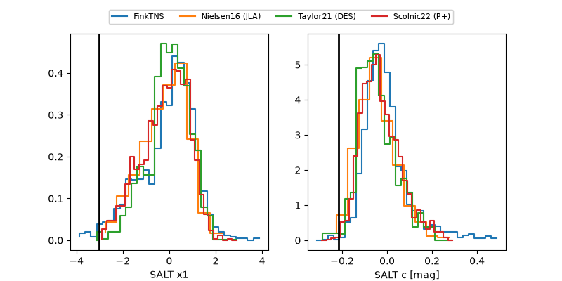

2026afrd
Target 2026afrd at 2026-11-06 20:10
Aliases and brokers:
FINK-ZTF: ztf.fink-portal.org/ZTF26acbhsyf
Lasair-ZTF: lasair-ztf.lsst.ac.uk/objects/ZTF26acbhsyf
ALeRCE-ZTF: alerce.online/object/ZTF26acbhsyf
YSE-PZ: ziggy.ucolick.org/yse/transient_detail/2026afrd
TNS name: wis-tns.org/object/2026afrd
Direct TNS query: direct search
alt names
ZTF26acbhsyf (ztf,fink_ztf)
2026afrd (tns,yse)
Coordinates:
equatorial (ra, dec) = 336.7060,-17.89813
equatorial (HMS+DMS) = 22:26:49.45,-17:53:53.29
galactic (l, b) = (40.7262,-55.48419)
Flags:
peak dt: +13.1
Photometry:
last ztfg=19.87, ztfr=19.53
5 ztfg, 5 ztfr detections
Lightcurve

Visibility



Additional plots
